Communications setup allows the user to set the communications parameters for each supported communications interface on the controller.
A controller may have one or more communications interfaces used for special purposes and which are not directly configurable by the user.
The “Controller/Communications” sub-menu contains an entry for each configurable interface.
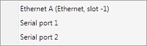
Selecting an interface will open the appropriate configuration tool.
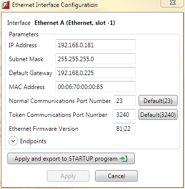
This is the IP Address of the controller. If the IP address of the controller is changed in this dialog, the actual IP address used by the controller will not be updated until the controller is reset.
The subnet mask defines the size of the subnet to which the controller is connected. All devices on the same subnet must have the same subnet mask.
The default gateway is the IP address to which all Ethernet communications to addresses outside the local subnet are directed. The address required here is in the same subnet as the controller’s IP address and is generally the address of a dedicated gateway or router.
If the controller is connected to a subnet which does not have an external connection then this can be set to a free IP address in the same subnet as the controller.
This is the hardware MAC address of the controller. It is read-only.
This is the IP port used for normal communications (with Motion Perfect). The default is 13 and this should be used wherever possible.
This is the IP port used for communication with the Trio PC Motion ActiveX control. The default value is 3420 and should be used wherever possible.
This is the version number of the Ethernet firmware on the controller. It is read-only.
Endpoint settings are configured using tabbed pages:
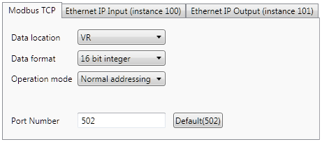
“Port Number” specifies the TCP port over which communications take place. Default is TCP port 502.
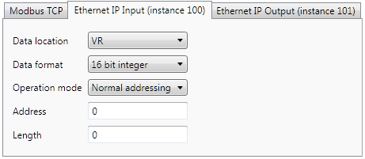
“Address” and “Length” specify the start address (in the specified “ Data Location ”) and the length (number of units of data as specified in “ Data Format ”) in the Ethernet IP input message.
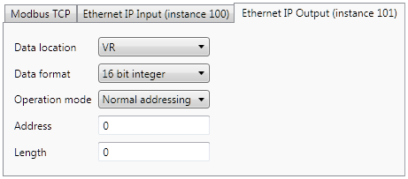
“Address” and “Length” specify the start address (in the specified “ Data Location ”) and the length (number of units of data as specified in “ Data Format ”) in the Ethernet IP input message.
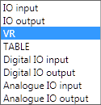
This specifies the location of the endpoint on the controller. MODBUS can only use “VR” or “TABLE”, Ethernet IP can use all locations.
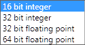
This specifies the precision (size) of the data. Default is 16 bit integer.

This specifies which addressing method to use. MODBUS can use both “Normal Addressing” and “Address Halving”, Ethernet IP always uses “Normal Addressing”.
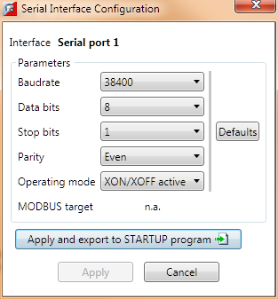
This specifies the settings for a serial port on the controller.
This sets the serial communications speed. The following values are available:
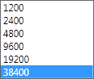
The setting will largely depend on the speed capability of the device at the other end of the serial link. The default value is 38400.
This sets the number of data bits transmitted and received.
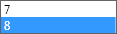
A link using an ASCII protocol may use 7 or 8 bits, a binary protocol (e.g. MODBUS) must use 8 bits.
This sets the type of parity.

This sets the number of stop bits, 1 is normal.
This sets the operating mode. For normal serial communications one of the first two modes should be used.
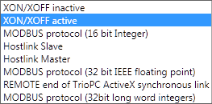
This sets the target memory type for MODBUS communications modes.
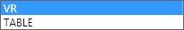